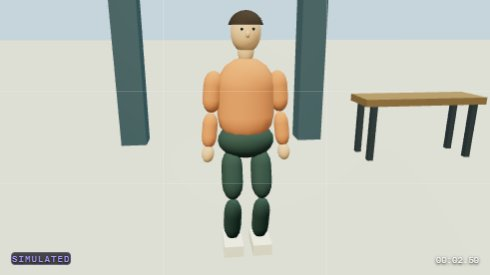
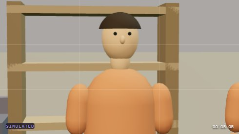
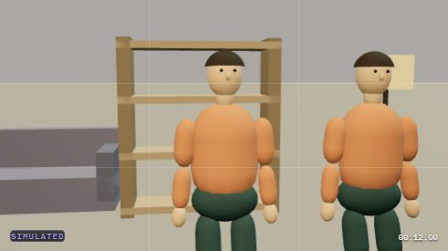
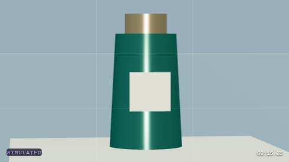
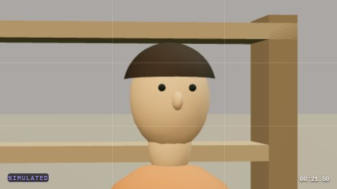
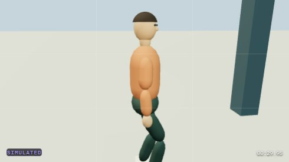

Reproduced contradiction: shot 2 is called “boom up,” but its requested heights are 1.55 m → 1.55 m and its achieved camera position does not change. The new saved-program checker reports this separately from framing.






Actual saved-program audit result · Read-only checker · Full opening screenshot
62 existing targeted tests passed. Shot 2 was separately compiled offline with 52 filmed samples and zero camera displacement. The new checker reports one contradiction and one unverified live-follow condition. No paid generation, training or hardware trial was performed.
Framing, narrative quality and physical qualification are separate judgments. These are sampled images, not a complete temporal test. Other changes appeared in the live checkout; this audit did not revert them.